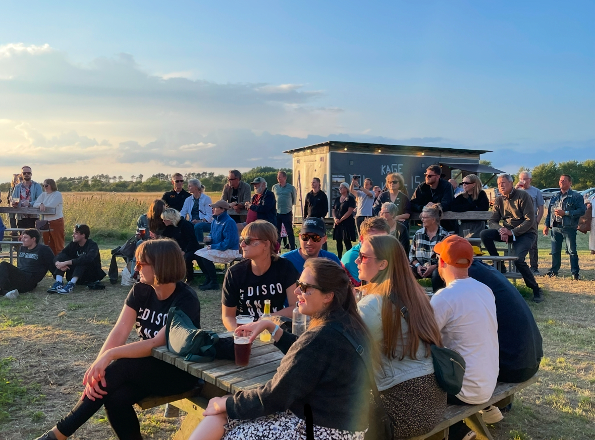
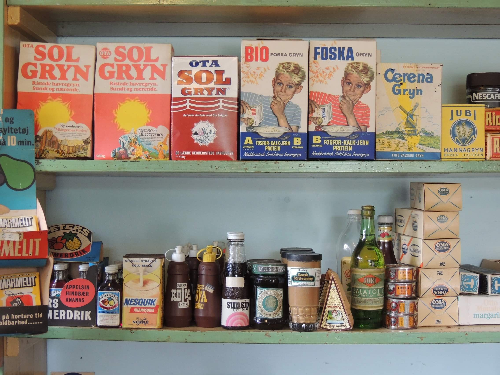
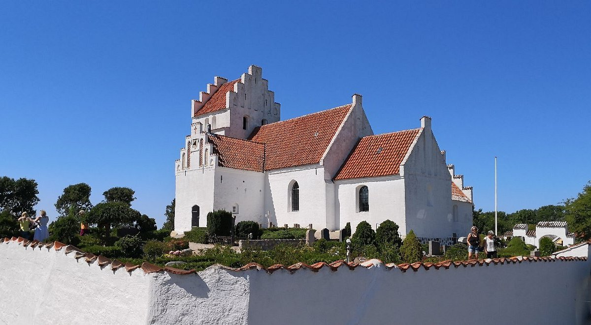
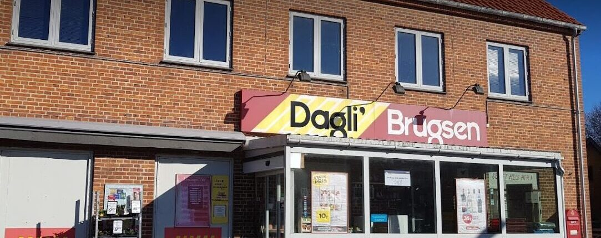
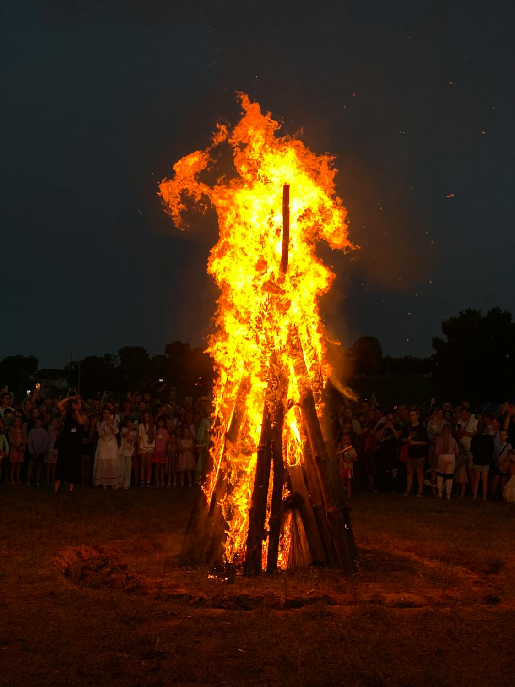
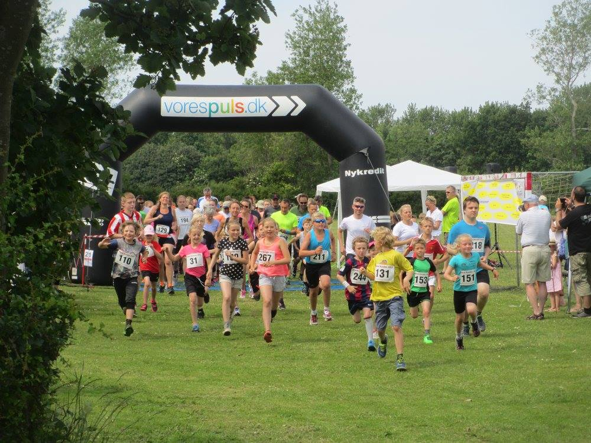

Her kan du fået overblik af kommende begivenheder på Sejerø.

9. Maj - 14. Juni, Sejerø Kulturhus
Sejerøvej 7, Sejerby, 4592
Lokale kunstnere udstiller igen i år i Sejerø Kulturhus
til forårs udstillingen. åbent fra d. 9. maj indtil 14. juni alle lørdage og søndage (kr.
Himmelfartsferien og 2.pinsedag) kl. 11-16.
Kig forbi og se de mange flotte værker. Eleverne i Billedkunst og Håndværk og Design fra Sejerø skole
deltager også. entre 30 kr.

15. Maj - 15. September, Sejerø kirke
Mastrupvej 4A, Sejerby, 4592
Gudstjenester i Sejerø kirke.

30. Maj kl. 12:30
Sejerby 39, Sejerby, 4592
Se opslag i Brugsen

23. Juni, Cafe Mini
Vesterbyvej 9B, Sejerø, 4592
Sankt Hans aften fejres igen i år på Sejerø Minigolf med bål og sange. Alle er velkomne

27. Juni, Klubhuset
Vesterbyvej 9B, Sejerø, 4592
Sejerø Runden 2026
D. 27. Juni 2026 afholdes Sejerø Runden for 11. år i træk. Det hyggelige
motionsløb for hele familien. Der kan løbes 5km, 10km og halv maraton. Og der er også en 5km gåtur.